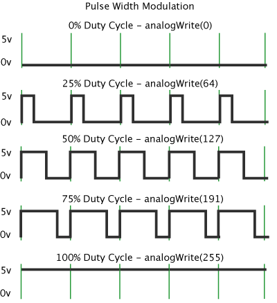
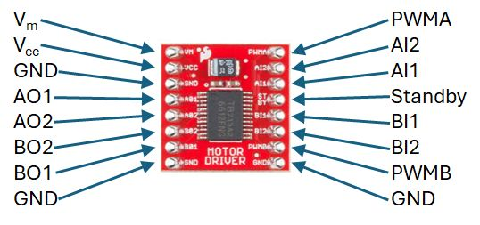

DC Motor Exercise
GTA Marking
This is an assessed Exercise. When you have completed the Assessed Exercise, you should show your work to a GTA to get marked.
Prerequisite Hardware Setup
Before starting these exercises, ensure that you have completed the circuit on the robot chassis as illustrated in
The following video is a quick demonstration of the final outcome from this exercise:
Introduction
The aim of this exercise is to control a DC motor from an Arduino using a DC motor driver interface and a Pulse-Width Modulation (PWM) signal.
PWM Control for the DC Motor
Pulse-Width Modulation (PWM) is a method for encoding information into a rectangular pulse train. Generally, the signal period \(T_{\text{s}}\) (and hence the frequency) is held constant while the pulse width is varied; this definition will be used for the remainder of these laboratory sessions.

PWM can be used in several ways, the most common being to "chop" a DC voltage to reduce its average value, as illustrated graphically in
$$ V_{ave} = \frac{1}{T} \int_{t_0}^{t_2} V_{in} dt = \frac{t_{on}} {T_{s}}V_{in} $$
where \(V_{\text{in}}\) is the supply voltage, \(V_{\text{ave}}\) is the average output voltage, and \(T_{\text{s}}\) is the PWM switching period.
This operating principle is used in most power electronic converters to control energy delivery to downstream loads, such as electric motors. Another application of PWM is encoding numerical information as a function of the on-time duration \(t_{\text{on}}\) while maintaining a constant switching period \(T_{\text{s}}\). The receiving system decodes the pulse duration to perform a corresponding action.
During these laboratory exercises, you will drive two distinct types of actuators:
- A DC motor: To control the rotational speed, you will adjust the PWM signal to regulate the average voltage supplied to the motor windings. A dedicated motor driver circuit is required between the Arduino and the motor to supply its current demand.
- A standard servo motor: This servo motor rotates between \(0^\circ\) and \(180^\circ\), where the output angle is controlled using a \(+5\,\text{V}\) pulse signal bounded between \(1\,\text{ms}\) and \(2\,\text{ms}\), utilizing an internal potentiometer for closed-loop position feedback.
The DC motor differs fundamental from the standard servo motor in its control methodology. For servo motors, the average voltage of the PWM signal is not used to regulate supply power (as it is for DC motors). Instead, the PWM pulse duration \(t_{\text{on}}\) - bounded between \(1\,\text{ms}\) and \(2\,\text{ms}\) - acts as an encoded command signal corresponding to the target rotational position for the servo's internal closed-loop controller.
Code Example: Control LED Intensity Example
In this example, we will use the analogWrite() function to generate a PWM signal to vary the voltage supplied to an LED, thereby adjusting its brightness..
The analogWrite() function accepts an integer value between \(0\) and \(255\), which maps linearly to a PWM output duty cycle between \(0\%\) and \(100\%\), as illustrated in


(

The Arduino language reference page for the analogWrite command can be found at: https://www.arduino.cc/reference/en/language/functions/analog-io/analogwrite/.
Procedure:
-
The circuit requirement for this exercise is the LED Pattern circuit, which should already be built on your robot chassis.
-
Use the following example code to run this exercise:
LED Fade.ino Example//This sketch is the Control LED Intensity Example from the Introduction to // Arduino – PWM control of Actuators laboratory worksheet // define a macro for the LED pin number #define LEDpin 11 // ------------------------------------- // Setup function void setup() { // define the pin mode for the LED pin pinMode(LEDpin, OUTPUT); } // ------------------------------------- // Lop Function void loop() { // Increment a variable, i, from 0 and 255 for (int i = 0; i < 256; i++) { // modify the PWM signal, by passing the variable, i, to the //analogWrite function analogWrite(LEDpin, i); //delay the program by 10ms delay(10); } // Decrement a variable, i, from 255 to 0 for (int i = 255; i >= 0; i--) { // modify the PWM signal, by passing the variable, i, to the //analogWrite function analogWrite(LEDpin, i); //delay the program by 10ms delay(10); } } -
Run the program and observe how varying the values passed to the
analogWrite()function affects the LED brightness.
Using the TB6612FNG breakout board
A DC motor cannot be powered directly from the output pins of an Arduino board because the motor's current draw exceeds the pin ratings, which can permanently damage the microcontroller. To safely interface the motor, a power electronic driver circuit is required to handle the higher load currents. During this exercise, you will use a TB6612FNG motor driver breakout board, as shown in


This section provides useful background information to help you get started with the TB6612FNG breakout board. While it does not cover every detail, numerous online guides and datasheets describe how to interface this board with an Arduino microcontroller.
The TB6612FNG from Toshiba is a monolithic H-bridge driver IC—a single integrated circuit containing the power electronic switching and control circuitry required to drive electric motors. The IC features two independently controlled H-bridge output channels. Refer to the datasheet linked in the following section for complete electrical specifications.
In isolation, surface-mount ICs are difficult to prototype on breadboards without custom PCBs. Breakout boards bridge this gap by exposing the surface-mount chip pins via standard breadboard-compatible headers, allowing easy connection to microcontrollers like the Arduino.
The TB6612FNG breakout board, shown in
Online Documentation from the Manufacturer and External Sites
Semiconductor manufacturers provide technical specifications for their devices through datasheets, along with application notes and reference materials for complex components. Below are links to relevant manufacturer documentation and application guides:
- TB6612FNG Data sheet (TOSHIBA):
TB6612FNG Data sheet . - SparkFun Breakout Board Datasheet:
SparkFun Motor Driver - Dual . - STMicroelectronics Application Note:
Applications of Monolithic Bridge Driver . - STMicroelectronics Technical Presentation:
An Introduction to Electric Motors .
H-Bridge Circuit and Example Code
The TB6612FNG IC contains two independent H-bridge circuits. This guide focuses on the operation of a single H-bridge channel (Channel B). The motor output pins for Channel B are BO1 and BO2, controlled via the PWMB input signal. The direction of rotation is configured using control inputs BI1 and BI2. (The detailed theoretical operation of H-bridge circuits is covered in course lecture materials.)
Before proceeding, verify that you have constructed the H-bridge circuit described in the
Operation of the TB6612FNG Driver Board Circuit
Each H-bridge output channel is configured using two directional control inputs (IN1 and IN2), paired with a dedicated PWM input (PWM). The operational logic for the H-bridge channel is summarized in
indicates that the motor direction is configured using the directional control inputs (IN1 and IN2, or BI1 and BI2 for Channel B), while motor speed is controlled via the PWM input (PWMB for Channel B). The standby pin (STBY) sets the driver board into a low-power sleep state when driven LOW.
Motor Wiring Polarity
The wiring polarity of the motor terminals determines whether a forward command results in clockwise or counter-clockwise rotation. Reversing the motor lead connections on output terminals BO1 and BO2 will invert the motor's rotational direction.
Example code is provided below to demonstrate basic motor operation. The analogWrite() function generates a PWM signal to set motor speed using the following duty-cycle parameters:
- 0% duty cycle, (always Low):
analogWrite([PWM pin number], 0) - 100% duty cycle, (always High):
analogWrite([PWM pin number], 255) - Intermediate duty cycle (1% to 99%): Write values between
1and254to theanalogWrite()function.
The official Arduino language reference for the analogWrite() function is available at:
https://docs.arduino.cc/language-reference/en/functions/analog-io/analogWrite/
Sample Code for the TB6612FNG Driver Board
// TB6612FNG Driver Board Sample board
//
// Author: Ben Taylor
// University of Sheffield
// Date: September 2024
//
const int pinBI1 = 7; // Pin allocation for BI1
const int pinBI2 = 8; // Pin allocation for BI2
const int pinPWM = 5; // Pin allocation for the PWMB pin
boolean BI1 = 0; // BI1 pin value
boolean BI2 = 0; // BI2 pin value
boolean standBy = 0; // standBy pin Value
boolean rotDirect = 0; // Rotation direction variable
unsigned char pwmValue = 0; // PWM value to be written to the output
void setup()
{
// Assign the digital I/O pin directions
pinMode(pinBI1, OUTPUT);
pinMode(pinBI2, OUTPUT);
pinMode(pinPWM, OUTPUT);
//Initialize the serial port
Serial.begin(9600);
// Set Initial values for BI1 and BI2 control function pins
BI1 = 1;
BI2 = 0;
// set an initial value for the PWM value
pwmValue = 200;
}
void loop()
{
// Write the BI1 and BI2 values to the configuration pins
digitalWrite(pinBI1, BI1);
digitalWrite(pinBI2, BI2);
// Write the pwnValue to the PWM pin
analogWrite(pinPWM, pwmValue);
// Display the board variable status to the Serial Monitor
Serial.print("PWM output value = ");
Serial.print(pwmValue);
Serial.print(", Standby = ");
Serial.print(standBy);
Serial.print(", BI1 = ");
Serial.print(BI1);
Serial.print(", BI2 = ");
Serial.println(BI2);
// wait 250ms
delay(250);
}
Assessed Exercise
During this exercise, you will modify the sample code provided above to implement proportional speed and direction control for a DC motor using an analog potentiometer.
Procedure:
-
Setup & Verification:
- Copy and paste the sample code for the TB6612FNG driver board into a new Arduino sketch.
- Read the code and inline comments thoroughly. Compile, upload, and run the sketch to verify hardware operation.
-
Control Implementation:
- Write a program that controls both the speed and direction of rotation of the DC motor using an analog input from a potentiometer.
- When the potentiometer is rotated to its extreme clockwise position, the motor must rotate at maximum speed in a clockwise direction (when viewed from the shaft end).
- When the potentiometer is rotated to its extreme counter-clockwise position, the motor must rotate at maximum speed in a counter-clockwise direction (when viewed from the shaft end).
- When the potentiometer is in its center position, the motor shaft must come to a complete stop (\(0\,\text{RPM}\)).
- The rotational speed of the motor must vary linearly between \(0\,\text{RPM}\) (center position) and maximum speed (at either extreme limit).
- Serial Monitor Diagnostics:
-
Print the following parameters to the Serial Monitor at regular intervals using descriptive labels:
- Analog-to-Digital Converter (ADC) raw value from the potentiometer pin (\(0\) to \(1023\)).
- Calculated PWM value passed to the analogWrite() function (\(0\) to \(255\)).
- Boolean output states for BI1, BI2, and STBY.
-
Exercise Assessment
What we expect to see from your demonstration?
- Demonstrate that you have fulfilled the requirements of the exercise with your working system.
- The mapping of the potentiometer to shaft speed is consistent with the description above.
- An external power supply is used to power the motor circuit, (Vm on the driver board).
- ADC measurement from the potentiometer, PWM value and control logic Boolean values are clearly labelled and displayed on the serial monitor.
- The serial monitor should update at a reasonable rate – 2 to 4 times a second.
Now Get Your Work Marked by a GTA
Once you have completed your code and are satisfied with its operation, you should show your work to a GTA for marking.